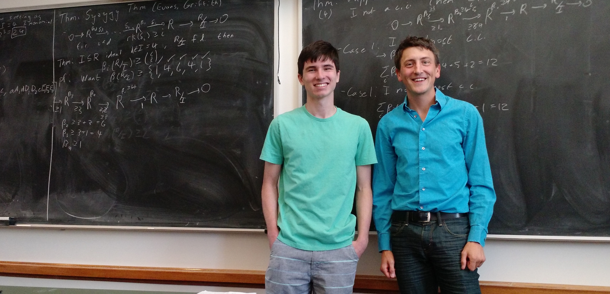
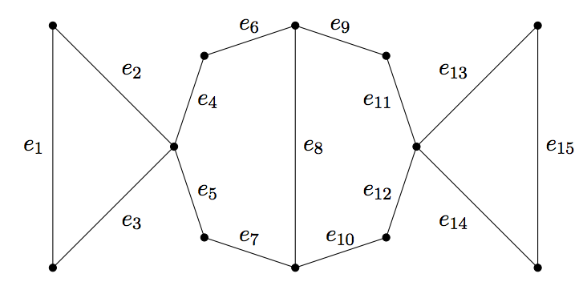
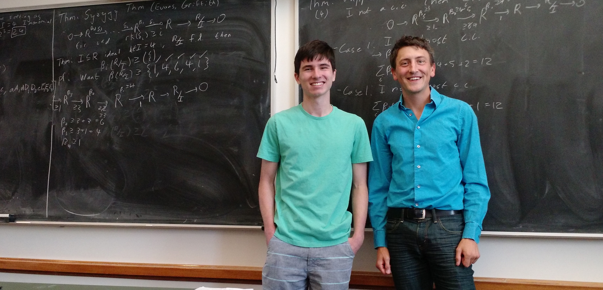
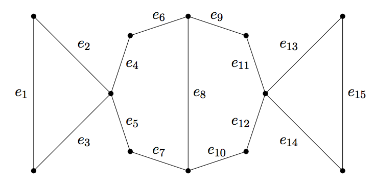

Research Interests
My research broadly concerns interactions between algebraic geometry, combinatorics, and
commutative
algebra. I am particularly interested
in studying the way in which geometric information is preserved (or changed) upon
deformation. Using
these techniques I've been able to better understand the minimal free resolution and minimal
generating sets of many classes of ideals arising from determinants, matroids, and graphs.
It has
also allowed us to better understand the way that the deviations of algebras (which are
determined
by its Poincaré series) behave.
Recently, I've been very interested in bounding the Betti numbers of certain classes of
algebras.
For instance in work with Srikanth Iyengar and Hamid Hassanzadeh we look at whether the
upper bounds
on the Betti numbers implied by the Taylor Complex hold for arbitrary Koszul algebras.
On the other hand, with Jimmy Seiner, I've studied lower bounds for Betti numbers of
monomial
ideals.
Electronic copies of my papers are linked below.
Here is my CV.
Links to Research papers
- On the Rank of Multigraded Differential Modules to appear in Mich. Math. J.
- Lower Bounds on Betti Numbers in Springer Volume in honor of David Eisenbud’s 75th Birthday (2021). (with E. Grifo)
- Techniques for predicting and avoiding unintentional biplanar movements during iliosacral screw placement Injury (2021) (with Ajinkya Rane, Bennet Butler, Robert O’Toole))
- Large lower bounds for the betti numbers of graded modules with low regularity (with D. Wigglesworth) Collectanea Math. (2021)
- Lower bounds for Betti numbers of monomial ideals (with J. Seiner) J. Algebra 2018
- Koszul algebras defined by three relations (with H. Hassanzadeh, S. Iyengar) Springer INdAM Volume in honor of Winfried Bruns 2017
- The software package SpectralSequences (with N. Grieve, E. Grifo) Submitted
- On the growth of deviations (with A. D'Alì, E. Grifo, J. Montaño, A. Sammartano) Proc. Amer. Math Soc.(2016)
- Edge ideals and DG algebra resolutions (with A. D'Alì, E. Grifo, J. Montaño, A. Sammartano) Le Matematiche (2015)
- The closure of a linear space in a product of lines (with Federico Ardila) J. Alg. Comb. (2016)
- Robust graph ideals (with B. Brown, T. Duff, L. Lyman, T. Murayama, A. Nesky, K. Schaefer) Ann. Comb. (2015)
- Robust toric ideals (with E. Robeva) J. Symbolic Computation (2015)
- Free resolutions and sparse determinantal ideals Math. Research Letters (2011)
- Formal fibers of unique factorization domains (with M. Daub, S. Loepp) Canad. J. Math (2010)
- Dimensions of formal fibers of height one prime ideals (with M. Daub, R. Johnson, H. Lindo, S. Loepp, P. Woodard) Comm. Algebra (2010)
- Sampling Lissajous and Fourier knots J. Experient. Math (2009)
- On generators of bounded ratios of minors for totally positive matrices (with B. Froehle) Linear Alg. Appl. (2008)
 



Undergraduate Research
I enjoy working on research projects with undergraduates in a variety of settings. If you are interested in an independent study course, please let me know! Below are some documents from previous work with students:- Brandon Eickert (Independent study on Algebraic Geometry)
- Miranda Skinner (Independent study on Linear Algebra and Machine Learning)
- Valerie Gilbert (Honors Thesis on Minimal Free Resolutions and Betti Numbers) pdf
- Jonathan Cardenas (Independent study on Algebraic Geometry)
- Noble Williamson (Honors Thesis, U. Utah) pdf
Presentation on Robust Graph Ideals
Presentation on Regularity
(Students advised: Bryan Brown, Timothy Duff, Laura Lymna, Takumi Murayama, Amy Nesky, Karl Schaefer)